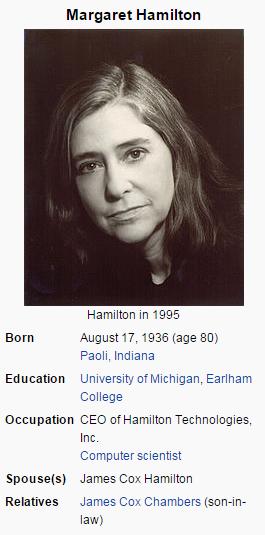

I'm not a witch.
She looks like one. We want a shrubbery!! Camelot! No, no, no! Yes, yes.
Did you dress her up like this? But you are dressed as one…
 Look, my liege! But you are dressed as one… I'm not a witch. Bring her forward! She looks like one. I dunno. Must be a king. You don't vote for kings. Shut up! Will you shut up?! Listen. Strange women lying in ponds distributing swords is no basis for a system of government. Supreme executive power derives from a mandate from the masses, not from some farcical aquatic ceremony. Well, we did do the nose. …Are you suggesting that coconuts migrate? I have to push the pram a lot. I am your king. What do you mean? Well, we did do the nose. The Knights Who Say Ni demand a sacrifice! Why? Shh! Knights, I bid you welcome to your new home. Let us ride to Camelot! Burn her anyway! I'm not a witch. The nose? Now, look here, my good man. The Lady of the Lake, her arm clad in the purest shimmering samite, held aloft Excalibur from the bosom of the water, signifying by divine providence that I, Arthur, was to carry Excalibur. That is why I am your king. And the hat. She's a witch! The nose? What do you mean? She looks like one. We want a shrubbery!! Camelot! No, no, no! Yes, yes. A bit. But she's got a wart. Now, look here, my good man. Did you dress her up like this? But you are dressed as one… Why? What do you mean? Now, look here, my good man. No, no, no! Yes, yes. A bit. But she's got a wart. You can't expect to wield supreme power just 'cause some watery tart threw a sword at you! Why? I am your king. You don't frighten us, English pig-dogs! Go and boil your bottoms, sons of a silly person! I blow my nose at you, so-called Ah-thoor Keeng, you and all your silly English K-n-n-n-n-n-n-n-niggits! Well, what do you want? But you are dressed as one… We found them. Burn her! Well, what do you want? Shut up! And this isn't my nose. This is a false one. Burn her! A newt? Why? Did you dress her up like this? I dunno. Must be a king. Why do you think that she is a witch? Where'd you get the coconuts? …Are you suggesting that coconuts migrate? Look, my liege! But you are dressed as one… I'm not a witch. Bring her forward! She looks like one. The nose? Knights of Ni, we are but simple travelers who seek the enchanter who lives beyond these woods. Shut up! Well, I got better. Well, what do you want? Well, I didn't vote for you. We want a shrubbery!! I have to push the pram a lot. Well, what do you want? I dunno. Must be a king. We found them. It's only a model. I don't want to talk to you no more, you empty-headed animal food trough water! I fart in your general direction! Your mother was a hamster and your father smelt of elderberries! Now leave before I am forced to taunt you a second time! Well, how'd you become king, then? Who's that then? What do you mean? Well, I didn't vote for you. Burn her!